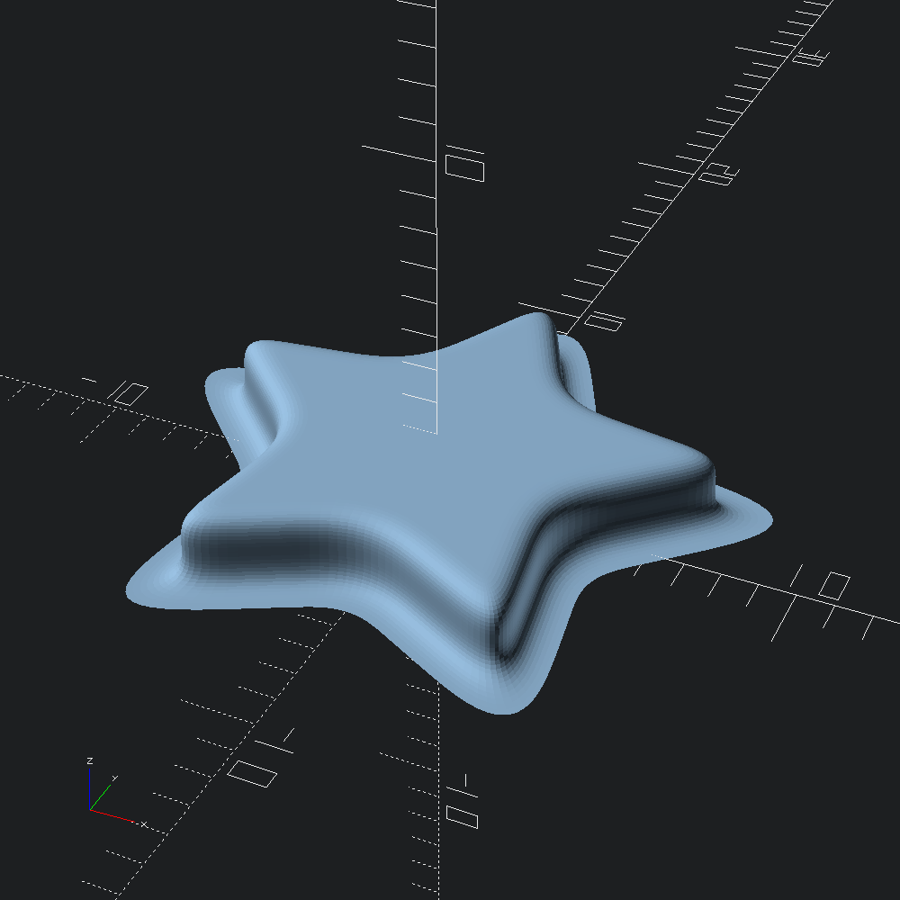
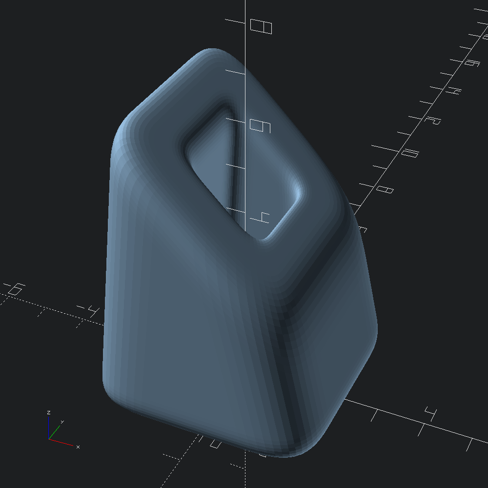

open OCADml
open OSCADmlIf you are in need of extrusions with more continuous curvature than what can be achieved by Mesh.Cap.t specified sweep caps, there are the Mesh.linear_prism and Mesh.prism.
Generally, each of the joint_ pairs describe the desired rounding length "backwards" and "forwards" from the edge (for _top and _bot, this is from the perspective of facing the opposite edge). The sign of the first element of the top and bot pairs determines whether the curvature flairs inwards or outwards, depending on the winding direction of the path (positive will lead to inward rounding for CCW paths).
For more details on what each of the joint_ parameters for Mesh.prism mean, see the documentation for the Mesh.Prism.spec type.
let () =
Poly2.star ~r1:4. ~r2:8. 5
|> Mesh.(
linear_prism
~outer:
Prism.(
spec
~joint_top:(0.95, 0.95)
~joint_bot:(-1., 1.)
~joint_sides:(`Flat (2., 2.))
())
~height:2.)
|> Scad.of_mesh
|> Scad.to_file "rounded_prism_star.scad"
The Mesh.prism function provides us with a bit more power, allowing us to form meshes around our own transformed bottom and top polygons, rather than simply linearly extruding upward from the base polygon.
For this example, we'll make a box outline for our base, and rotate then translate the same shape up to act as our top polygon. Rotation about the y-axis does not break the requirements of Mesh.prism, since all of the sides will still be coplanar polygons. Note that z-axis rotations would violate this.
let bot = Poly3.box ~center:true ~thickness:(v2 3. 3.) (v2 5. 5.)
let top = Poly3.translate (v3 0. 0. 5.) (Poly3.rotate (v3 0. (Float.pi /. 4.) 0.) bot)Create a rounded mesh between our bot and top polygons, with separate roundover joint specifications for the outer and inner shapes. By default, ?holes will be `Flip, which mimics ~outer, but negates the first element of joint_top and joint_bot to account for assumed opposite winding direction of the inner paths. In this example, we'll instead use `Spec to directily specify the treament of the inner path, in part to prevent collision of our outer and inner roundovers.
let tunnel =
let outer =
Mesh.Prism.spec
~joint_top:(0.8, 0.8)
~joint_bot:(0.8, 0.8)
~joint_sides:(`Flat (1.5, 1.5))
()
and holes =
`Spec
(Mesh.Prism.spec
~joint_top:(-0.5, 0.5)
~joint_bot:(-0.5, 0.5)
~joint_sides:(`Flat (0.5, 0.5))
() )
in
Mesh.prism ~fn:16 ~outer ~holes bot topConvert our tunnel mesh into an OpenSCAD polyhedron and output to file.
let () = Scad.to_file "rounded_prism_tunnel.scad" (Scad.of_mesh tunnel)